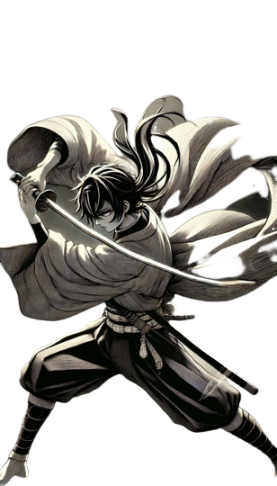
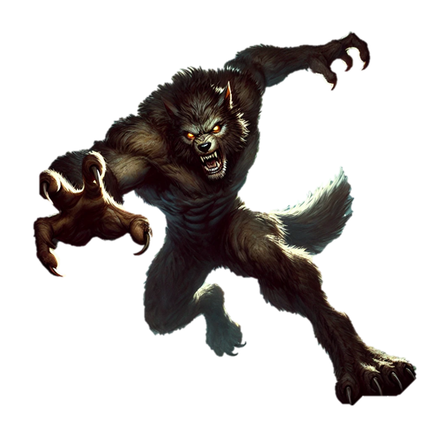

 
Kirito
{{ health }} / {{ maxHealth }}
LV: {{ level }}
Wolf
{{ wolfHealth }} / {{ wolfMaxHealth }}
第 {{ currentQuestionIndex + 1 }} 题：{{ currentQuestion.question }}
{{ option }}
{{ Math.floor(loadingProgress) }}%
{{ title }}
{{ startButtonText }}
Your browser does not support the audio element.